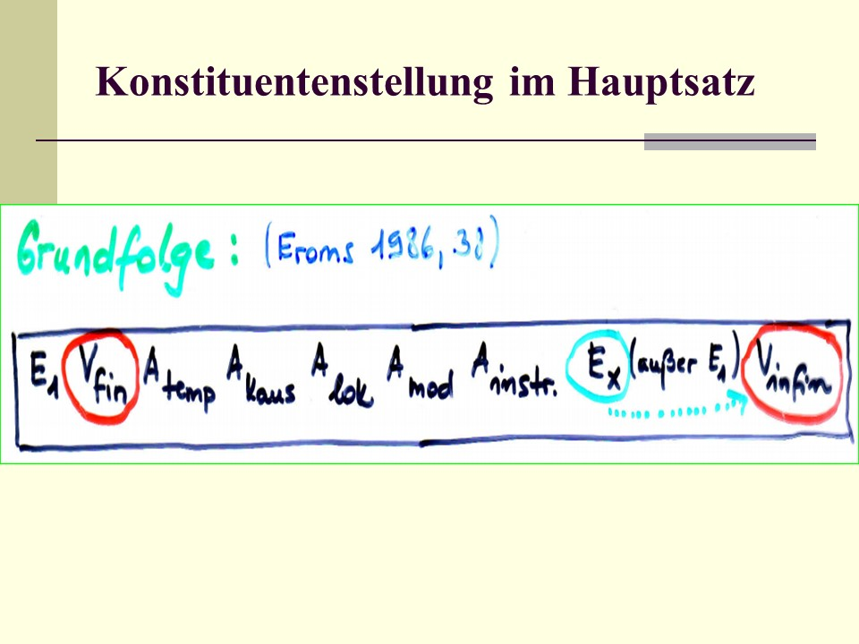
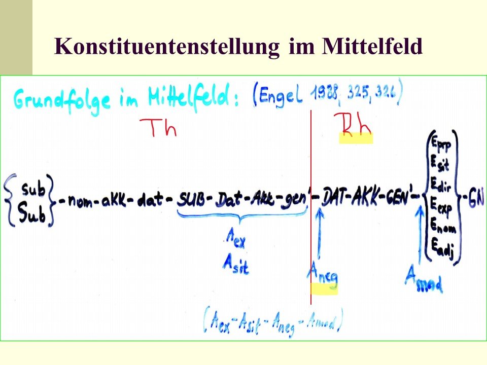
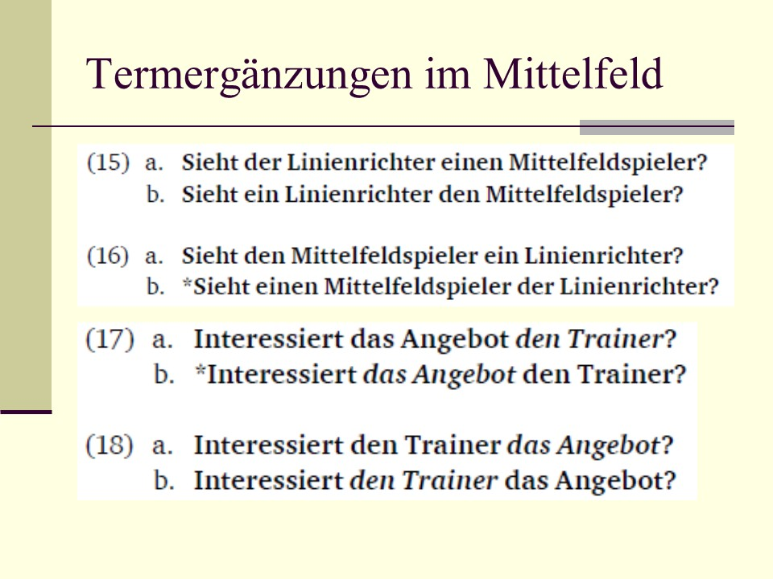
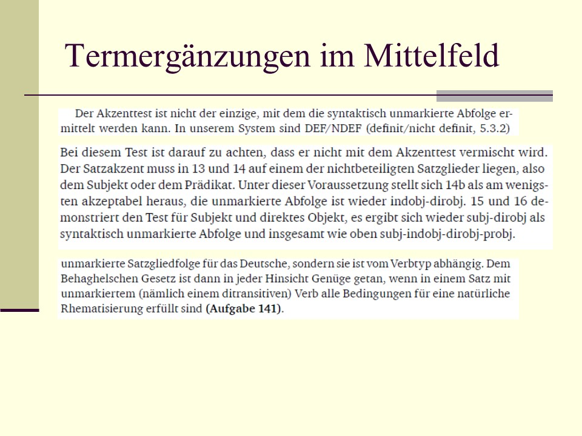

6 Grundfolge und Phrasenverschiebungen
Im Kapitel über den Aufbau deutscher Sätze haben wir bereits das Feldermodell verwendet, wonach die Verbformen den Satz in drei Stellungsfelder zerlegen, und zwar in Vor-, Mittel- und Nachfeld. Schauen wir uns nun an, nach welchen Prinzipien die Stellungsfelder, und zwar insbesondere das Mittelfeld, mit Satzgliedern besetzt werden und nach welchen Prinzipien Verschiebungen von Satzkonstituenten bzw. Phrasen vorgenommen werden können!
6.1 Grundfolge nach Eroms (1986)
(Eroms 1986) hat im Rahmen seines Valenzmodells auch ein Schema für die Grundfolge der Ergänzungen und Angaben in deutschen Hauptsätzen (Aussagesätzen) vorgeschlagen:
- die finite (Vf) und infinite Verbform (Vi) bilden den Satzrahmen,
- das Subjekt (hier: E1) steht häufig im Vorfeld (also vor der linken Satzklammer);
- im Mittelfeld stehen die Angabeklassen vor den Ergänzungsklassen (ausgenommen ist das Subjekt);
- die Angabeklassen zeigen die Reihenfolge temporale Angabe >> kausale Angabe >> lokale Angabe >> modale Angabe >> instrumentale Angabe.

Die von (Eroms 1986) vorgeschlagene Grundfolge für das Mittelfeld deutscher Hauptsätze richtet sich nach dem Prinzip der Verbnähe: da die Ergänzungen von der Valenz des zentralen Verbs abhängen, stehen sie im Mittelfeld in der Nähe des zentralen Verbs, das bei diskontinierlichem Prädikat in der rechten Satzklammer steht. Die Angaben stehen verbferner (weiter weg von der rechten Satzklammer), da sie nicht valenzabhängig sind.
- [ E~sub Till Eulenspiegel] [ Vf hat] [ Atemp vorige Nacht] [ Akaus aus lauter Verdruss] [ Alok im Hühnerstall] [ Edat den Hühnern] [ Eakk die Federn] [ Vi ausgerissen].
6.2 Grundfolge im Mittelfeld
6.2.1 Ergänzungen
In der Grammatik von (Engel 1996) wird die Grundfolge der Termergänzungen mit Hilfe der Kriterien Wortklassenzugehörigkeit (z.B. Pronomen vs. Nomen), Referenzgefälle (definit vs. indefinit) und Ergänzungstyp (z.B. Term- vs. Adverbialergänzung u.a.) festgelegt. Im folgenden Grundfolgeschema für das Mittelfeld sind:
- pronominal realisierte Ergänzungen mit Kleinbuschstaben symbolisiert (z.B. sub),
- Ergänzungen, die einen nominalen Kopf und definiten Artikel enthalten, mit einem großen Anfangsbuchstaben (z.B: Akk),
- Ergänzungen, die einen nominalen Kopf und indefiniten Artikel enthalten, mit Großbuchstaben (z.B. DAT),
- Termergänzungen und adverbiale Ergänzungen, die gewöhnlich als Präpositionalphrasen realisiert sind, mit einem großen E (z.B. Edir),
- die Prädikativergänzung und Gefügenomina (d.h. Nomina von Konstruktionen mit prädikatsähnlicher Funktion) mit speziellem Symbol.
6.2.2 Angaben
Die Grundfolge der Angabeklassen wird angegeben mit:
Aexist / Asit >> Aneg >> Amod .
Die modifizierenden Angaben stehen dem Verb am nächsten, deshalb stehen sie im Mittelfeld weit rechts in der Nähe der rechten Satzklammer. Die existimatorischen und die situierenden Angaben sind verbnäher, denn sie modifizieren den gesamten Sachverhalt bzw. bilden ein ein vom Sprecher abgegebenes Urteil über den im Satz ausgedrückten Sachverhalt. Die negative Angabe (gewöhnlich als Negationspartikel nicht, vor indefiniten Ergänzungen aber auch der negierte Determinativ k-ein) ist Bestandteil der neuen oder wichtigen Information und kommt daher in der Grundfolge vor dem rhematischen Bestandteil des Satzes zu stehen.

Existimatorische Angaben erscheinen möglichst verbfern (weit weg von der rechten Satzklammer) und wegen ihrer Nicht-Verneinbarkeit vor einer negativen Angabe Mit existimatorischen Angaben sendet der Textproduzent Signale, welche Einstellung oder Meinungen er zum besprochenen Sachverhalt vertritt.
Die Abtönungspartikeln stehen vor den anderen existimatorischen Angaben (2), und zwar entweder vor oder nach definiten Ergänzungen. Die negative Angabe folgt den existimatorischen Angaben ist Teil des Rhemas (3).
- [ Alok Auf der Brücke] [ LSK konnte] [ Esub man] [ Eakk definit die Gefahr] [ Aex Abtönungspartikel ja] [ Aex verifikativ tastsächlich] [ Aex judikativ bemerkenswerterweise] [ Aex kautiv geradezu] [ rechtes MF: –] [ RSK spüren].
- [ Alok Auf der Brücke] [ LSK konnte] [ Esub man] [ Aex Abtönungspartikel ja] [ Eakk definit die Gefahr] [ Aex verifikativ tastsächlich] [ Aex judikativ bemerkenswerterweise] [ Aex kautiv geradezu] [ Aneg nicht] [ RSK spüren].
Die folgende Grundfolge im Falle mehrerer im Satz auftretender existimatorischer Angaben wird von (Engel 1996) angegeben:

In den Grammatiken von (Engel 1996) und (Eisenberg 2004) werden die folgenden Kriterien für die Reihenfolge von Ergänzungs- und Angabeklassen im Mittelfeld angegeben und besprochen.

Es handelt sich um heterogene Kriteriuen: Wortklasse, syntaktische Funktion, Satzakzent, Bedeutung und Ausdruckskomplexität.
6.3 Termergänzungen im Mittelfeld
Es folgen mehrere Beispiele aus der Grammatik von (Eisenberg 2004), anhand derer die verschiedenen Abfolgen der Termergänzungen (insbesondere Subjekt, Dativ- und Akkusativergänzung) illustriert und diskutiert werden.
In Abhängigkeit von der Fragestellung (eine allgemeine Frage: was ist passiert? vs. eine spezifische Frage: Wem hat Emma das Auto geliehen?) sind verschiedene Reihenfolgen möglich, gleichzeitig werden aber auch syntaktische Beschränkungen oder semantische Präferenzen sichtbar.



Zur Festlegung der unmarkierten und markierten Reihenfolge von Ergänzungen verwendet (Eisenberg 2004) mehrere Tests:
- den Akzenttest,
- syntaktische Funktion,
- Definitheit vs. Indefinitheit,
- Abhängigkeit von der Semantik des Verbtyps.

6.4 Satznegation im Mittelfeld
Gemäß der Grundfolge tritt die Satznegation (Negationspartikel nicht oder Negationsartikel k-ein) im rechten Teil des Mittelfeldes auf, in dem rhematische Informationen übermittelt werden.

Einige Beispiele zur Illustration der Stellung der negativen Angabe im Mittelfeld.